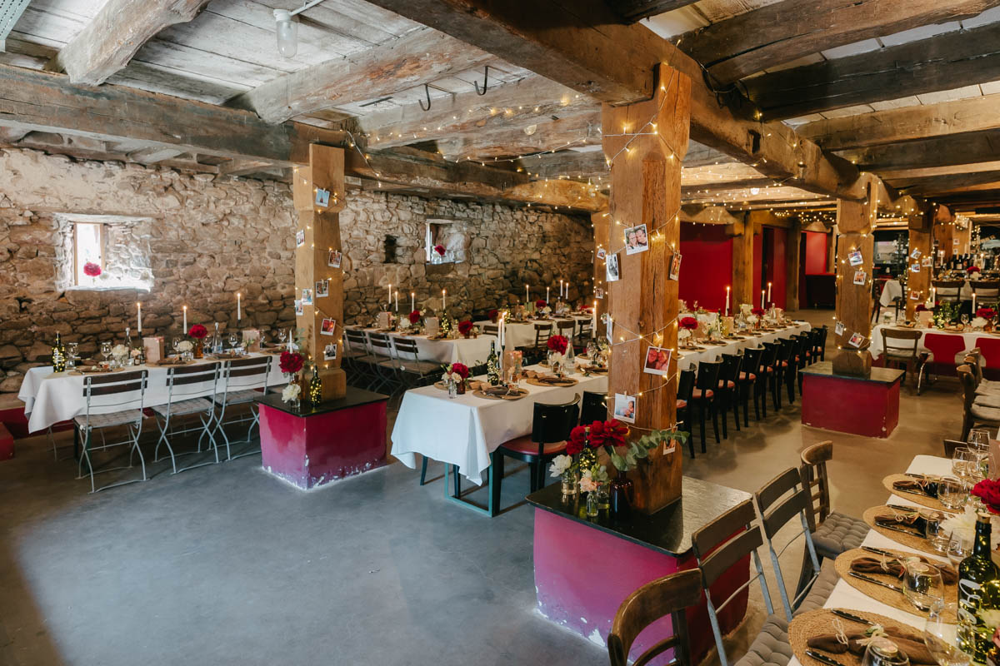

Wenn ihr eine Hochzeit auf dem Klausenbauernhof in Wolfach plant. Habt ihr auf jeden Fall eine tolle Wahl für eure Hochzeitslocation gefunden. Mitten im Kinzigtal gelegen kommen hier Schwarzwald-Gefühle auf. Umringt von den Tannen besetzten Hügeln bietet der Klausenbauernhof einige Besonderheiten, die andere Höfe nicht bieten.
Beginnen wir damit, dass der Hof schon über 450 Jahre alte ist. 450 Jahre! Wie cool ist das bitte? Trotz seines Alters ist er in gutem Schuss und wird von den Besitzern stetig gepflegt.
Prinzipiell bietet der Hof alles, um den ganzen Tag dort zu verbringen, sei es eine Schlafmöglichkeit, ein Ort für den First-Look oder Platz um den Abend ausklingen zu lassen.
Für den First-Look bietet sich vor allem der kleine Garten an. Das eingemauerte Arial bietet tolle Kulissen im Hintergrund und ist überwuchert mit schönen Pflanzen, wie zum Beispiel einem Rosenbogen.
Für das Paarshooting bieten sich unzählige Möglichkeiten, über den Hof verteilt. Sei es jetzt im Schatten der großen Linde, die Tenne oder die tollen Fachwerkbauten, die über den ganzen Hof verteilt sind. Auch eine süße Schaukel bietet der Klausenbauernhof für eure Hochzeitsbilder.
Unter der angesprochenen Linde bietet sich viel Platz für die Trauung, der Hof bietet beispielsweise Strohblöcke an, auf denen eure Hochzeitsgäste Platz nehmen können.
Über den Nachmittag bietet der Klausenbauernhof viel Schatten, Stehtische und Sitzgelegenheiten, die einen entspannten Sektempfang perfekt machen. Versorgt werdet ihr vom Klausenbauernhof mit vorzüglichen Flammkuchen, die Lust auf das Abendessen machen.
Für das Abendessen und die nächtliche Feier bietet der Hof in Wolfach einen tollen Steinkeller. Hier bleibt es schön kühl und eure Hochzeitsgäste können den Abend genießen. Für das Buffet gibt es im Außenbereich eine große Theke, auf der sich der externe Catering Service austoben kann. Bei der richtigen Wahl kann euch bestimmt das Team vom Klausenbauernhof helfen.
Je nach Größe eurer Hochzeitsfeier müssen für die Feier am Abend ggf. ein paar Tische weichen, um Platz für die Tanzfläche zu machen. Ist das aber geschafft, wartet eine unvergessliche Feier auf euch und am Ende wundervolle Bilder, die euch in Erinnerungen schwelgen lassen.
Du sucht einen Fotografen für deine Hochzeit auf dem Klausenbauernhof in Wolfach?
Schreib mir eine Nachricht!